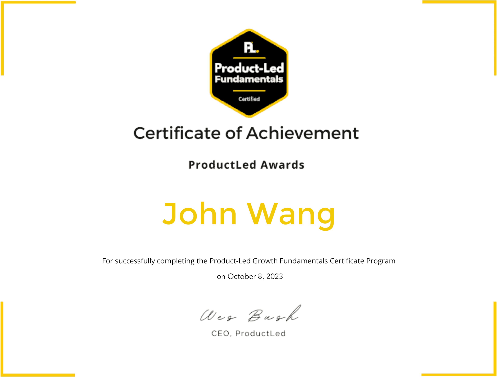

John's Product Management Certificates
Frameworks (2)
Customer-Centric IT Strategy from University of Virginia, Darden School by Alex Cowan

The Strategist's Challenge from University of Virginia, Darden School Foundation by Michael Lenox, Jared Harris

Product-Led Growth (PLG) (1)
Product-Led Fundamentals from ProductLed

Machine Learning (2)
Machine Learning Foundations for Product Managers from Duke University by Jon Reifschneider

AI for Product Management from Pendo

Product Owner (4)
Certified Scrum Product Owner (CSPO) from Scrum Alliance


Professional Scrum Product Owner I (PSPO I) from Scrum.org

Scrum Product Owner Accredited Certification (SPOAC) from Scrum Institute

Certified DevOps Product Owner (DevOps-PO) from DevOps Academy